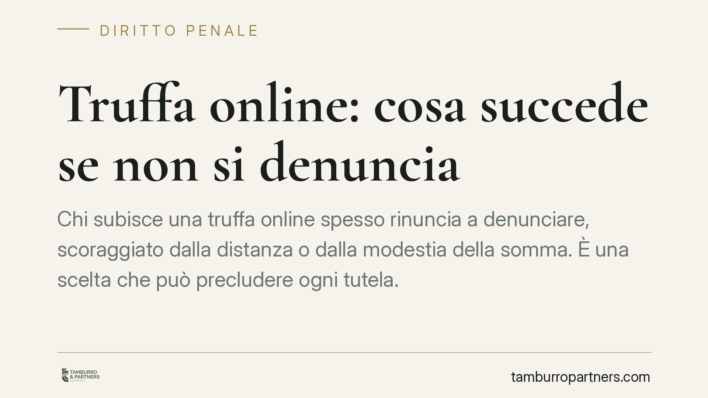

Truffa online: cosa succede se non si denuncia
Chi subisce una truffa online spesso rinuncia a denunciare, scoraggiato dalla distanza o dalla modestia della somma. È una scelta che può precludere ogni tutela. Dopo la riforma Cartabia e con l'attenzione del legislatore ai reati telematici, conoscere termini e condizioni di procedibilità è decisivo per non perdere il diritto di agire.

Il fatto
La truffa online è la frode patrimoniale realizzata tramite internet: finti annunci di vendita, falsi profili, phishing, pagamenti anticipati per beni che non arrivano mai. Molte vittime non denunciano, convinte che per piccole somme non valga la pena o che l'autore, spesso irreperibile, non sarà mai individuato. Questa inerzia produce conseguenze giuridiche precise, a partire dalla possibile perdita del diritto a procedere.
Inquadramento normativo
La truffa è disciplinata dall'art. 640 del codice penale. Dopo la riforma Cartabia (D.Lgs. 150/2022), il reato è procedibile a querela della persona offesa, salvo che ricorra una circostanza aggravante: in quel caso si procede d'ufficio (art. 640, terzo comma, c.p.).
Tra le aggravanti rileva la cosiddetta minorata difesa (art. 61, n. 5, c.p.): l'aver approfittato di circostanze di tempo, luogo o persona tali da ostacolare la difesa della vittima. Secondo un orientamento consolidato della Cassazione, la dimensione telematica può integrare questa aggravante: la distanza fisica tra autore e vittima, l'anonimato e l'uso di strumenti informatici riducono le possibilità di controllo e reazione di chi subisce la frode. Quando l'aggravante è contestata e riconosciuta, la truffa diventa procedibile d'ufficio.
Questo assetto discende già dal codice e dalla riforma Cartabia. Gli interventi normativi più recenti in materia di sicurezza si muovono nella direzione di un maggior rigore verso i reati commessi con mezzi informatici, ma la regola sulla procedibilità d'ufficio in presenza di aggravante non è una novità introdotta ex novo: va letta alla luce dell'art. 640 c.p. nella sua formulazione vigente.
Procedibilità e punibilità: due piani distinti
È utile tenere separati due concetti che spesso vengono confusi.
La procedibilità riguarda la possibilità stessa di avviare o proseguire il processo. Nella truffa semplice, senza querela nei termini, il reato non è perseguibile. Nella truffa aggravata, invece, si procede d'ufficio: lo Stato può agire anche senza l'impulso della vittima.
La punibilità attiene invece alla possibilità di escludere la pena per la particolare tenuità del fatto (art. 131-bis c.p.). Questo istituto consente di non punire condotte di offensività minima. Attenzione però: il secondo comma dell'art. 131-bis c.p. esclude la tenuità in presenza di determinate aggravanti e in presenza di condotte particolarmente gravi. La valutazione non è automatica, ma la contestazione di un'aggravante incide concretamente sulla possibilità di invocare la non punibilità.
Implicazioni pratiche per la vittima
Il punto decisivo è il termine per la querela: per la truffa, dopo la riforma Cartabia, il termine è di sei mesi dal giorno in cui si è avuta notizia del fatto (art. 124 c.p.). Superato quel termine, nei casi procedibili a querela, il diritto di agire è perduto in via definitiva.
Non denunciare significa, in concreto:
- rinunciare alla possibilità di ottenere il risarcimento in sede penale;
- lasciare l'autore libero di ripetere la condotta su altre vittime;
- perdere l'accesso agli strumenti investigativi che solo l'autorità può attivare (tracciamento di conti, IP, flussi di pagamento).
Anche quando la somma appare modesta, la denuncia alimenta il quadro probatorio: le frodi seriali emergono spesso dall'aggregazione di più segnalazioni che, isolate, sembravano irrilevanti.
Cosa fare in concreto
- Conservare ogni traccia digitale: screenshot delle conversazioni, dell'annuncio, dei profili, delle email e delle ricevute di pagamento, con data e ora visibili.
- Annotare le coordinate: IBAN, numeri di carta o wallet usati per il pagamento, nickname e link del venditore.
- Presentare querela entro sei mesi dalla scoperta del fatto, presso Polizia Postale, Carabinieri o Procura, descrivendo con precisione la dinamica.
- Attivarsi subito con la banca o il gestore del pagamento per tentare il blocco o lo storno della somma, dove ancora possibile.
- Valutare la posizione con un legale quando la frode presenta elementi di serialità, importi rilevanti o profili di aggravante, per impostare correttamente la richiesta risarcitoria.
La tempestività resta il fattore più rilevante: la finestra iniziale, sul piano sia probatorio sia del recupero delle somme, è quella in cui si gioca gran parte della tutela.
Disclaimer
Contributo informativo a cura di Tamburro & Partners - Avv. Giuseppe Tamburro. Non costituisce parere legale.
Ogni condominio ha una storia a sé.
Se gestisci un'amministrazione e vuoi un confronto su una specifica questione condominiale, scrivi allo studio. Ti rispondiamo entro un giorno lavorativo.